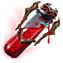
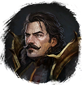

Кровь вампира
Предметы / Ключи
Открыть в интерактивной вики →
| Вес | 0 |
|---|---|
| Цена | 0 |
Описание
Нужна, чтобы войти в монастырь Волькхарда. Продает

Лорвенд| Нужна, чтобы войти в монастырь Вольхарда. |
Рецепт
Покупка: 21x  Кровь чудовища + 21x
Кровь чудовища + 21x  Гроссмейстерский глиф + 35kk
Гроссмейстерский глиф + 35kk
Кровь чудовища + 21x Гроссмейстерский глиф + 35kkПрименение
|
Как добыть
| Покупка у Лорвенд на Монастырских лугах:
Если в инвентаре 7 или больше Крови вампира, покупка следующих заблокирована. |